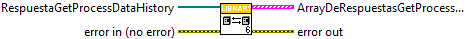

Contiene las funciones que transformas objetos .NET a cluster
Subfunción que transforma el objeto .NET RespuestaGetAllStations a el cluster respuestaGetAllStations.
Controles:
- RespuestaGetAllStations: array de objetos .NET a tranformar
- error in (no error): Entrada de errores
Indicadores:
- Array: array de cluster respuestaGetAllStations
- error out: Salida de errores
Subfunción que transforma los objetos de respuesta de .NET (CheckQuarantine) en clusters que entiende LabView.
Controles:
- CheckQuarantine: array de objetos CheckQuarantine de .NET
- error in (no error): entrada de errores
Indicadores:
- arrayDeRespuestas: array de respuestaCheckQuarantine
- eror out 2: salida de errores
Subfunción que transforma el objeto .NET RespuestaGetProcessDataHistory a el cluster respuestaGetProcessDataHistory.
Controles:
- RespuestaGetProcessDataHistory: array de objetos .NET a tranformar
- error in (no error): Entrada de errores
Indicadores:
- ArrayDeRespuestasGetProcessDataHistory: array de cluster respuestaGetProcessDataHistory
- error out 2: Salida de errores

Subfunción que transforma el objeto .NET RespuestaPartUsage a el cluster respuestaPartUsage.
Controles:
- RespuestaPartUsage in: array de objetos .NET a tranformar
- error in (no error): Entrada de errores
Indicadores:
- ArrayDeRespuestaPartUsage: array de cluster respuestaPartUsage
- error out: Salida de errores
Subfunción que transforma el objeto .NET RespuestaOperationInfo a el cluster respuestaGetCurrentOperationStatus.
Controles:
- GetOperationAttributes: array de objetos .NET a tranformar
- error in (no error): Entrada de errores
Indicadores:
- ArraydeRespuestasGetCurrentOperationstatus: array de cluster respuestaGetCurrentOperationStatus
- error out 2: Salida de errores

Subfunción que transforma el objeto .NET RespuestaLookUpForParent a el cluster respuestaLookUpForParent.
Controles:
- RespuestaLookUpForParent: objeto .NET a tranformar
- error in (no error): Entrada de errores
Indicadores:
- RespuestaLookUpForParent: cluster respuestaLookUpForParent
- error out 2: Salida de errores
Subfunción que transforma el objeto .NET RespuestaGetFmiStatusCodesInformation a el cluster respuestaGetFmiStatusCodesInformation.
Controles:
- RespuestaGetFmiStatusCodesInformation: objeto .NET a tranformar
- error in (no error): Entrada de errores
Indicadores:
- respuestaGetFmiCodesInformation: cluster respuestaGetCurrentOperationStatus
- error out 2: Salida de errores
Subfunción que transforma el objeto .NET RespuestaBirthHistory a el cluster respuestaGetBirthHistory.
Controles:
- RespuestaBirthhisotory in: array de objetos .NET a tranformar
- error in (no error): Entrada de errores
Indicadores:
- ArraydeRespuestas: array de cluster respuestaGetBirthHistory
- error out 2: Salida de errores